Benchmark / Near-lossless / cop-dem-glo30
cop-dem-glo30
50 samples of cop-dem-glo30, Copernicus DEM GLO-30 elevation.
Each point shows a configuration at this budget level. The line shows the best observed trade-offs. The All corpora view pools size and decode time across samples for configurations completed on every corpus with results at this level. Broken promises are listed below.
Samples
 cop-dem-glo30-00
cop-dem-glo30-00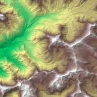
cop-dem-glo30-01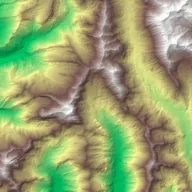
cop-dem-glo30-02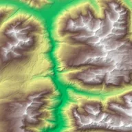
cop-dem-glo30-03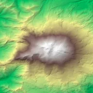
cop-dem-glo30-04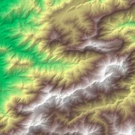
cop-dem-glo30-05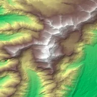
cop-dem-glo30-06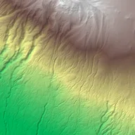
cop-dem-glo30-07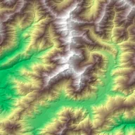
cop-dem-glo30-08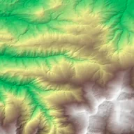
cop-dem-glo30-09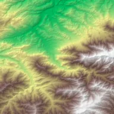
cop-dem-glo30-10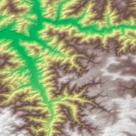
cop-dem-glo30-11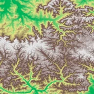
cop-dem-glo30-12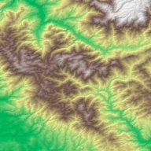
cop-dem-glo30-13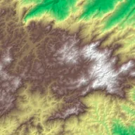
cop-dem-glo30-14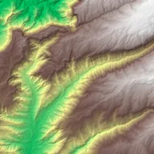
cop-dem-glo30-15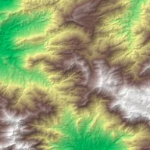
cop-dem-glo30-16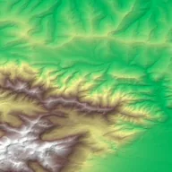
cop-dem-glo30-17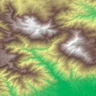
cop-dem-glo30-18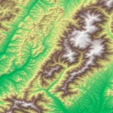
cop-dem-glo30-19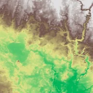
cop-dem-glo30-20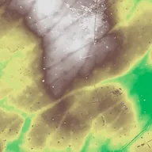
cop-dem-glo30-21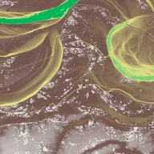
cop-dem-glo30-22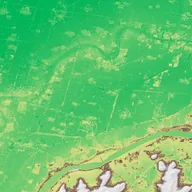
cop-dem-glo30-23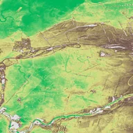
cop-dem-glo30-24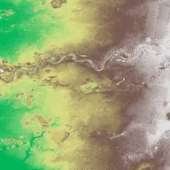
cop-dem-glo30-25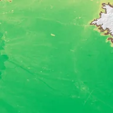
cop-dem-glo30-26cop-dem-glo30-27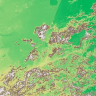
cop-dem-glo30-28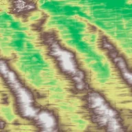
cop-dem-glo30-29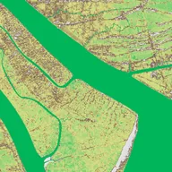
cop-dem-glo30-30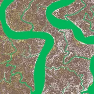
cop-dem-glo30-31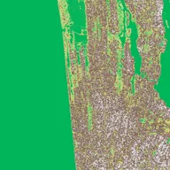
cop-dem-glo30-32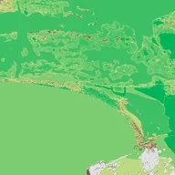
cop-dem-glo30-33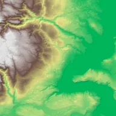
cop-dem-glo30-34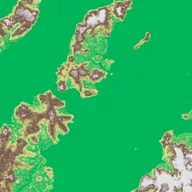
cop-dem-glo30-35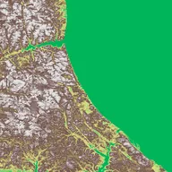
cop-dem-glo30-36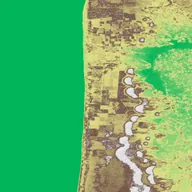
cop-dem-glo30-37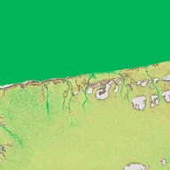
cop-dem-glo30-38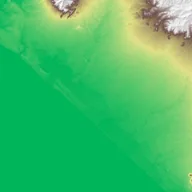
cop-dem-glo30-39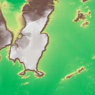
cop-dem-glo30-40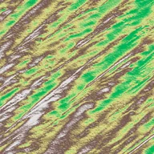
cop-dem-glo30-41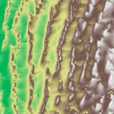
cop-dem-glo30-42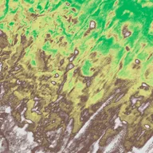
cop-dem-glo30-43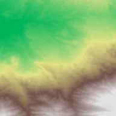
cop-dem-glo30-44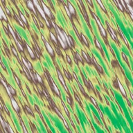
cop-dem-glo30-45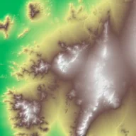
cop-dem-glo30-46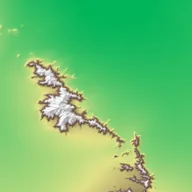
cop-dem-glo30-47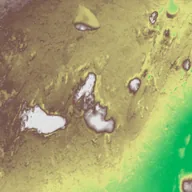
cop-dem-glo30-48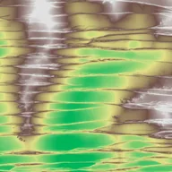
cop-dem-glo30-49